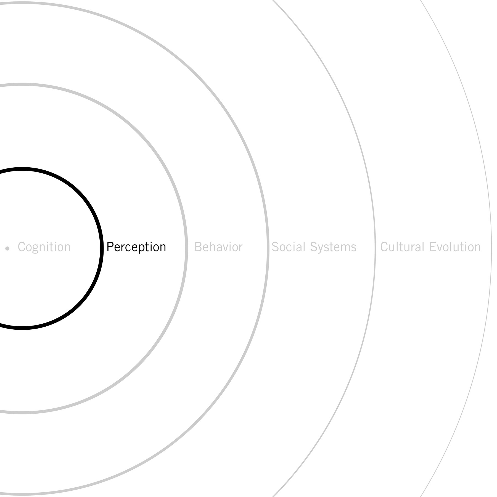

Desirability is a strange thing. It’s so often shaped by our culture, our upbringing, our desire, but even what advertising and media tell us is "desirable", and how our lives could improve if we just had that thing. Berger extends this to include context. As someone that worked in branding, I’m deeply familiar with the concept of shaping value through contextual cues. We would often explain to clients how consistency, recognizability and rarity could raise the perceived value of the product or service they were selling. "Designed in California", "1 of 1" or "owned by Kurt Cobain" could quickly add perceived value where there was none. My work in brand valuation was to try and provide a dollar amount to show that intangible value that comes from context. And while we could come up with a list of factors that explained them, ultimately, any attempt to quantify that intangible value was still somewhat subjective.
One interesting evolution from Berger’s time is the NFT. An attempt to make easily reproducible images into something exclusive and unique again. Now obviously the value of NFTs is in the eye of the crypto-holder, but the goal (other than to find a unique use for the blockchain system) is to create exclusivity where there is none.
NFTs themselves are one in a long line of this form of exclusivity generation. I remember being in Wicker Park on a Sunday morning a couple of weeks ago and seeing a long line outside a store. It was a Supreme store, and the line of people were waiting for a "Drop". Most of them would be collectors or resellers. The value has little relation to the object itself, the utility it may have, or to the story or relationship to the individual. I wonder what Berger or Csikszentmihalyi would have thought of this.
Obviously, we can start to use contextual cues to our advantage when designing for audiences that may have different levels of comfort with a new type of technology. Solitaire was a great example of using an existing game to familiarize people with computer interfaces. The same can be said of folders, trash cans and recycle bins, and even Photoshop’s dodge and burn tool. For audiences that are more comfortable with the technology, it might be time to move away from skeuomorphs, but as in the case of the previous examples, and in the oft discussed "floppy disk save icon", these become a nostalgic cultural cue in and of themselves.